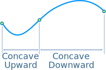
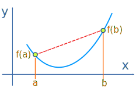
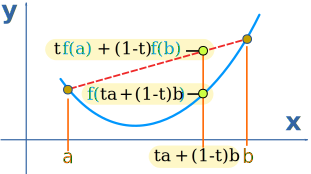
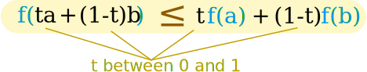
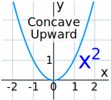
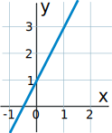

Concave Upward and Downward
| Concave upward is when the slope increases: |  |
|
| Concave downward is when the slope decreases: |  |
What about when the slope stays the same (straight line)? It could be both! See footnote.
Here are some more examples:

Concave Upward is also called Convex, or sometimes Convex Downward
Concave Downward is also called Concave, or sometimes Convex Upward
Finding where ...
Usually our task is to find where a curve is concave upward or concave downward:

Definition
A line drawn between any two points on the curve won't cross over the curve:
Let's make a formula for that!
First, the line: take any two different values a and b (in the interval we are looking at):

Then "slide" between a and b using a value t (which is from 0 to 1):
x = ta + (1−t)b
- When t=0 we get x = 0a+1b = b
- When t=1 we get x = 1a+0b = a
- When t is between 0 and 1 we get values between a and b
Now work out the heights at that x-value:
|  |
When x = ta + (1−t)b:
|
And (for concave upward) the line should not be below the curve:

For concave downward the line should not be above the curve (≤ becomes ≥):
And those are the actual definitions of concave upward and concave downward.
Remembering
Which way is which? Think:
Concave Upwards = CUP
Calculus
Derivatives can help! The derivative of a function gives the slope.
- When the slope continually increases, the function is concave upward.
- When the slope continually decreases, the function is concave downward.
Taking the second derivative actually tells us if the slope continually increases or decreases.
- When the second derivative is positive, the function is concave upward.
- When the second derivative is negative, the function is concave downward.
Example: the function x2

Its derivative is 2x (see Derivative Rules)
Its second derivative is 2
Both give the correct answer.
Example: f(x) = 5x3 + 2x2 − 3x

Let's work out the second derivative:
- The derivative is f'(x) = 15x2 + 4x − 3 (using Power Rule)
- The second derivative is f''(x) = 30x + 4 (using Power Rule)
And 30x + 4 is negative up to x = −4/30 = −2/15, and positive from there onwards. So:
Note: The point where it changes is called an inflection point.
Footnote: Slope Stays the Same
What about when the slope stays the same (straight line)?
A straight line is acceptable for concave upward or concave downward.
But when we use the special terms strictly concave upward or strictly concave downward then a straight line is not OK.

Example: y = 2x + 1
2x + 1 is a straight line.
It is concave upward.
It is also concave downward.
It is not strictly concave upward.
And it is not strictly concave downward.